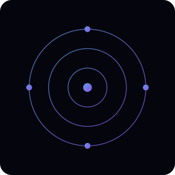

Utilization & Health
Average utilization
62%Latency budget
14 msEnergy draw
8.1 kWhFaculty of Information Technologies
Interactive sandbox for planning digital classroom infrastructure. Explore simulated network topologies, class schedules, and AI-assisted insights – using curated sample data ready for diploma defense demos.

Layer-2 mesh with redundant fiber rings and classroom access points.
Core node
Access / site
AI workload
Simulated lessons and bandwidth reservations across the teaching day.
Average utilization
62%Latency budget
14 msEnergy draw
8.1 kWhStatic showcase of how a natural-language assistant could summarize network posture.